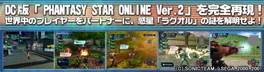
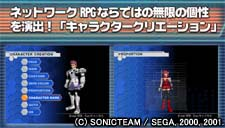
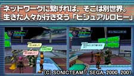
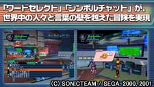
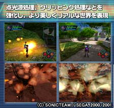
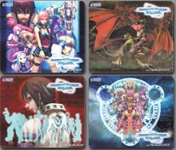

 |
| 2000年12月、コンシューマ初の３ＤネットワークＲＰＧとして発売された「PHANTASY
STAR ONLINE」は、発売後現在までに世界最大級（約30万人）のネットワーク登録者を獲得、第5回日本ゲーム大賞を含む計15もの賞を受賞した。そして今冬、ついにＰＣの世界にも「ＰＳＯ」が登場することとなった。
今回は、2001年6月に発売されたバージョンアップ版「PHANTASY STAR ONLINE Ver.2」の内容を完全再現。かつてないスケールの冒険が、いまＰＣの世界で展開される・・・・・・・「英雄は、ひとりじゃない。」 |
|  |  |
| ネットワークＲＰＧでは自分の分身と言えるキャラクター。その個性も「ＰＳＯ」では無限に演出できる。
９種類のキャラクターの中から１人を選択。顔、髪型、服装はもちろん、体型はモーフィングによって自在に設定可能。形成されるキャラクターのバリエーションはまさに無限大である。 |
ネットワークに接続したプレイヤーが最初に降り立つのが「ビジュアルロビー」。
ここでは生きたプレイヤーが活歩し、出会いからパーティー編成まで、ライブ感にあふれたコミュニケーションが楽しめる。 出会いによって物語が生まれる・・・まさに「ＰＳＯ」は生きたＲＰＧといえる。 |
| 
"ワードセレクト"とは、簡単な単語の組み合わせが、世界各地の言語に翻訳される簡易翻訳システム。"シンボルチャット"とは記号を組み合わせて絵文字を作成できるシステムである。これらを使用することで、「ＰＳＯ」ではたとえ言葉が通じなくとも、世界中の人々と言葉の壁を越えて冒険することが可能なのである。 PC版ではいままでの５カ国語に加え、中国語（簡体字、繁体字）、韓国語を追加した合計7ヶ国語に対応している。 |

PC版では様々な環境に対応できるよう、自分のPCのスペックに合わせてグラフィックやサウンド機能のカスタマイズを行うことができるようになっている。 |
|
タイトル
|
『ファンタシースターオンライン』 |
|
ジャンル
|
ネットワークＲＰＧ |
|
プレイ人数
|
１人用（ネットワーク対応） |
|
発売予定日
|
２００１年 １２月２０日 |
|
希望小売価格
|
￥６，８００(税別)
初回生産限定版にはオリジナルマウスパッドつき （４種類のうちどれかが同梱されています。）  |
|
ハンターズライセンス料
|
３０日￥１，０００
９０日￥２，０００ |
| 必要システム環境 | 推奨システム環境 | |
|
OS
|
Windows98 or Me or 2000 or XP(Direct X 8.1以降） | − |
|
CPU
|
Pentium III 450MHz 以上 | Pentium III 700MHz 以上 |
|
メモリ
|
64MB以上 | 128MB以上 |
|
HDＤ
空き容量 |
600MB以上 | 1.3GB以上 |
|
ディスプレイ
解像度 |
640ｘ480以上
HighColor(16ﾋﾞｯﾄ）以上 |
− |
|
CDドライブ
|
4倍速以上 | 8倍速以上 |
|
グラフィック
ボード |
Direct3D対応ボード
VRAM8MB以上 |
Direct3D対応ボード
VRAM16MB以上 |
|
サウンド
|
DirectSound対応ボード | - |
|
インターネット
環境 |
33,600bps以上の通信速度 | - |
| 「ファンタシースターオンライン」Windows版について |
| 「ファンタシースターオンライン」Windows版の発売にともない、日本国内においては既にネットワークゲームサービスを提供しているセガのグループ会社である株式会社ISAO（isao.net）に加え、ニフティ株式会社（@nifty）、日本電気株式会社（BIGLOBE）、ソニーコミュニケーションネットワーク株式会社（So-net）（順不同）、以上大手ISP事業会社3社とのアライアンスによるオープンISP方式の採用、PCメーカー各社を対象としたPCバンドル展開にて、同コンテンツを基盤とした新しいネットワーク事業を展開します。
また、ワールドワイドな展開を目指し、韓国、台湾、中国においては2002年2月より順次発売を行い、欧米については現在、提携先と協議中です。 セガはコンテンツプロバイダーとしてネットワークコンテンツを基盤としたネットワーク事業を展開する方針であり、まず、PC版「ファンタシースターオンライン」にて、オープンISP方式、PCバンドル展開という２つのPC事業戦略にて新しいネットワークビジネスモデルを構築します。
PCバンドルの展開は、PCハードにあらかじめ「ファンタシースターオンライン」Windows版が内蔵されることを目的にPCメーカー各社へのコンテンツ供給を行うものです。「ファンタシースターオンライン」Windows版がバンドルされたPCのユーザーは、オンライン販売される予定の"シリアル・アクセスキー"を購入することで認証権を取得し、同コンテンツのネットワークゲームサービス、および課金サービスを利用することができます。
セガは日本における「ファンタシースターオンライン」Windows版の販売開始にともない、従来のパッケージ販売のみならず、オープンISP方式の採用、PCバンドル展開という2つの戦略を付加することで、同コンテンツのネットワーク会員登録者数を劇的に高めることを目指しています。
2001.11.20 株式会社ソニックチーム・株式会社セガ
|
| マルチプラットフォーム戦略を展開するセガは、家庭用ゲーム機のみならず、PCへのコンテンツ供給を積極的に推進しています。PC事業においては、欧米市場に加えアジアを重要な潜在市場と位置づけており、先ごろ中国市場への進出を果たしました。
「ファンタシースターオンライン」Windows版のではDreamcast版に搭載された日本語、英語、フランス語、ドイツ語、スペイン語、以上5ヶ国語に対応した自動翻訳システム「ワードセレクトシステム」の機能向上を図り、中国語（簡体字、繁体字）、韓国語を追加した合計7ヶ国語に対応させる計画です。同機能により、言語の壁を超えたスムーズなコミュニケーションを促進する環境を提供し、PCというプラットフォームの属性を活かした世界規模でのネットワークプレイを実現します。 セガはコンテンツプロバイダーとして「ファンタシースターオンライン」を主軸とした様々な事業展開を計画しています。「ファンタシースターオンライン」Windows版のの発売はその一環であり、世界市場をターゲットとしたPC事業展開の強化を図ります。またDreamcast版、発売予定のニンテンドーゲームキューブ版と共に、「ファンタシースターオンライン」を供給する全プラットフォームにおけるネットワーク会員登録者100万人の早期実現を目指します。 2001.9.12 株式会社ソニックチーム・株式会社セガ
|
.